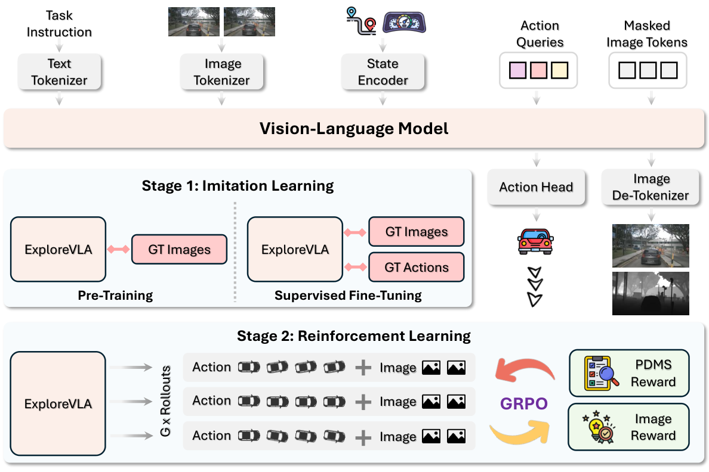

Summary
ExploreVLA 把”世界模型”同时当作稠密监督与探索信号，用在 VLA 驾驶模型上。监督侧，模型在预测未来轨迹之外，还生成 0.5 秒后的前视 RGB 与 depth，两者都用 MAGVIT-v2 离散 token 上的 masked token prediction 训练，迫使规划 backbone 学到外观与几何表示。探索侧，作者把世界模型对未来图像 token 的预测熵当作候选轨迹相对训练分布的新颖度：熵高说明该轨迹的视觉后果在专家数据中少见，若同时安全就值得鼓励。该熵经归一化后作为 exploration bonus，与 PDMS 组合成安全门控奖励 （仅当 ），再用 GRPO 做 Stage 2 后训练。基础架构是 Show-o（Phi-1.5 + MAGVIT-v2），单目前视相机输入，Stage 1 先做 10 epoch 图像生成预训练、再 15 epoch 联合 SFT，Stage 2 用 LoRA rank 32 做 5 epoch GRPO。NAVSIM v1 上 PDMS 93.7（best-of-6；不采样为 90.4），NAVSIM v2 EPDMS 88.8，nuScenes 只做 Stage 1 时 ST-P3 协议平均 L2 0.44 m / collision 0.10%。
Problem & Motivation
- VLA 驾驶模型的主流训练方式是 behavior cloning / SFT，策略只能复现专家分布内的行为，遇到分布外场景缺乏可用的探索经验。
- RL 能补上探索，但驾驶缺两个前提：没有可交互的高保真环境，且状态转移依赖复杂场景动态，无法像语言任务那样由模型输出直接决定下一状态。因此需要一个从数据中学到的世界模型来预判动作后果。
- 仅有任务奖励（如 PDMS）也不够：PDMS 衡量轨迹好不好，却区分不出”复现专家”与”真正发现新策略”。要鼓励后者，需要一个与任务性能正交的新颖度信号。
- 另一条线是监督稀疏：文本描述和 waypoint 只提供低维信息，道路拓扑、物体范围、深度序关系等对安全规划关键的结构几乎无监督。
- 作者的主张是这两个问题可以用同一个机制解决：世界模型的图像预测熵既是稠密监督的副产品，又天然度量轨迹相对整个训练分布的新颖度（而非相对单条 GT 的偏离），比 L2 距离更可靠。
Method
0. 总体框架
三个组件：(1) 统一的理解-生成 backbone，同一个 Transformer 内同时做自回归文本建模与离散图像生成；(2) 以未来 RGB + depth 生成为稠密世界模型目标，与轨迹预测共享表示；(3) 以世界模型预测熵为内在奖励，经安全门控后用 GRPO 做策略后训练。backbone 采用 Show-o，LLM 为 Phi-1.5，图像 tokenizer 为 MAGVIT-v2。
1. 输入、输出与 token 化
输入为当前与 0.5 秒前共 2 帧前视图像、自然语言 command 、ego status ；图像 resize 到 。输出为 个未来 waypoint、 帧未来 RGB、 帧未来 depth（附录为预测 0.5 秒后，即 ）。
文本用 LLM 自带 tokenizer 得到 ；图像用预训练 MAGVIT-v2 量化，lookup-free codebook 大小 ， patch，每帧 个 token， 帧拼成 ；ego status 经可学习 MLP 投影为 。轨迹不以 token 形式进入词表，而是从 Transformer 隐状态接轻量 MLP 头输出连续 waypoint：
2. 混合注意力
沿用 Show-o 的 omni-attention：文本 token 与 ego status embedding 走 causal attention，图像 token 走 full attention，使生成过程能完整看到当前驾驶上下文。
3. 稠密世界模型监督
未来 RGB 用 masked token prediction 训练，第 帧第 个被掩码 token 的损失为
depth 的损失形式相同，但条件里额外加入同帧的 RGB 掩码序列，形成 RGB→depth 的依赖：
RGB 监督纹理、颜色、物体身份与语义，depth 监督距离、空间布局与表面朝向，两者互补。depth 的 GT 由 Metric3D-ViT-Giant2 生成。
4. 预测熵作为探索奖励
对策略采样出的候选轨迹 ，令世界模型以它为条件生成未来 RGB 与 depth，取所有生成 token 位置上 codebook 分布的平均熵作为不确定度：
其中 是所有未来 RGB 与 depth 帧的生成 token 位置集合。熵高表示该轨迹的视觉后果在训练分布中少见。归一化后得到 exploration bonus：
5. 安全门控奖励
高不确定不等于有价值——撞车的轨迹同样新颖。作者用 PDMS 做门控，只有足够安全的轨迹才获得探索加成：
是安全阈值， 控制探索强度。
6. GRPO 策略优化
每轮从当前策略采样 条候选轨迹，按上式打分后在组内标准化得到优势：
更新时提高正优势轨迹的似然、压低负优势轨迹。
7. 训练策略与实现细节
Stage 1 分两步：先用 GT 未来动作作为输入、只做图像生成预训练 10 epoch，让模型适配驾驶场景的视觉生成；再联合预测动作与未来图像 SFT 15 epoch。Stage 2 用 LoRA rank 32 做 GRPO 后训练 5 epoch。nuScenes 上只做 Stage 1，因为该数据集缺少可作奖励的闭环指标。
| 项目 | 设置 |
|---|---|
| Backbone | Show-o（Phi-1.5 LLM + MAGVIT-v2 tokenizer） |
| 图像 codebook | 8192，patch |
| 输入 | 当前帧 + 0.5 s 前 1 帧前视图像， |
| 预测目标 | 0.5 s 后 1 帧 RGB + depth |
| depth GT | Metric3D-ViT-Giant2 |
| Stage 1 | 图像生成预训练 10 epoch + 联合 SFT 15 epoch |
| Stage 2 | GRPO + LoRA（rank 32），5 epoch |
| 优化器 / 学习率 | AdamW；Stage 1 ，Stage 2 |
| GRPO 超参 | ，KL 系数 ，clip |
| 奖励超参 | 安全阈值 ，探索权重 |
| per-GPU batch | Stage 1 = 8，Stage 2 = 1 |
| 硬件 | 4 × H200 |
| 规划 horizon | NAVSIM 4 s ；nuScenes 3 s |
Pipeline

- 取当前帧与 0.5 s 前的前视图像，连同语言 command、ego status 一起送入 Show-o backbone。
- 图像经 MAGVIT-v2 量化为离散 token，文本与 ego status 走 causal attention，图像 token 走 full attention。
- 从 Transformer 隐状态接 MLP 头，回归未来 waypoint。
- 同一模型在 masked token prediction 目标下生成未来 RGB 与 depth token，提供稠密视觉与几何监督。
- Stage 1 结束后，策略采样 条候选轨迹；每条轨迹送入世界模型生成未来图像，统计 token 分布的平均熵。
- 熵归一化为 exploration bonus，与 PDMS 组合成安全门控奖励，组内标准化后用于 GRPO 更新（仅 LoRA 参数）。
- 推理时输出 waypoint；报告 best-of-6 结果时从 6 条候选中选一条。
Key Results
1) NAVSIM v1（Table 1）
| Method | Input | NC ↑ | DAC ↑ | EP ↑ | TTC ↑ | Comf. ↑ | PDMS ↑ |
|---|---|---|---|---|---|---|---|
| Ego Status MLP | – | 93.1 | 78.3 | 63.2 | 84.0 | 99.9 | 66.4 |
| TransFuser | – | 97.8 | 92.6 | 78.9 | 92.9 | 99.9 | 83.9 |
| DRAMA | MC+L | 98.2 | 95.2 | 81.3 | 94.2 | 100.0 | 86.9 |
| Hydra-MDP | MC+L | 99.1 | 98.3 | 85.2 | 96.6 | 100.0 | 91.3 |
| Centaur | MC+L | 99.2 | 98.7 | 86.0 | 97.2 | 99.9 | 92.1 |
| DriveSuprim | MC+L | 98.6 | 98.6 | 91.3 | 95.5 | 100.0 | 93.5 |
| DrivingGPT | SC | 98.9 | 90.7 | 79.9 | 94.9 | 95.6 | 82.4 |
| FSDrive | SC | 98.2 | 93.8 | 80.1 | 93.3 | 99.9 | 85.1 |
| PWM | SC | 98.9 | 95.8 | 81.5 | 95.9 | 100.0 | 88.1 |
| AutoVLA | MC | 98.4 | 95.6 | 81.9 | 98.0 | 99.9 | 89.1 |
| AutoVLA† | MC | 99.1 | 97.1 | 87.6 | 97.1 | 99.9 | 92.1 |
| DriveVLA-W0 | SC | 98.7 | 99.1 | 87.6 | 97.1 | 100.0 | 90.2 |
| DriveVLA-W0† | SC | 99.9 | 97.4 | 88.3 | 97.0 | 99.9 | 93.0 |
| ExploreVLA | SC | 98.8 | 98.4 | 83.5 | 96.5 | 99.9 | 90.4 |
| ExploreVLA† | SC | 99.4 | 98.9 | 88.3 | 98.3 | 99.7 | 93.7 |
- 93.7 只比 DriveSuprim 的 93.5 高 0.2，且 ExploreVLA 用了 best-of-6，DriveSuprim 的推理协议未在表中说明。
- 不用 best-of-6 时是 90.4，与 DriveVLA-W0 的 90.2 基本持平；也就是说，去掉采样选择后领先幅度几乎消失。
- 增益的结构很明确：NC（99.4 vs 98.6）、TTC（98.3 vs 95.5）明显更高，但 EP 只有 88.3 vs DriveSuprim 的 91.3，说明策略更保守、更少碰撞但推进更慢。
2) NAVSIM v2（Table 2）
| Method | NC ↑ | DAC ↑ | DDC ↑ | TLC ↑ | EP ↑ | TTC ↑ | LK ↑ | HC ↑ | EC ↑ | EPDMS ↑ |
|---|---|---|---|---|---|---|---|---|---|---|
| Ego Status | 93.1 | 77.9 | 92.7 | 99.6 | 86.0 | 91.5 | 89.4 | 98.3 | 85.4 | 64.0 |
| TransFuser | 96.9 | 89.9 | 97.8 | 99.7 | 87.1 | 95.4 | 92.7 | 98.3 | 87.2 | 76.7 |
| Hydra-MDP++ | 97.2 | 97.5 | 99.4 | 99.6 | 83.1 | 96.5 | 94.4 | 98.2 | 70.9 | 81.4 |
| DriveSuprem | 97.5 | 96.5 | 99.4 | 99.6 | 88.4 | 96.6 | 95.5 | 98.3 | 77.0 | 83.1 |
| ARTEMIS | 98.3 | 95.1 | 98.6 | 99.8 | 81.5 | 97.4 | 96.5 | 98.3 | – | 83.1 |
| DiffusionDrive | 98.2 | 95.9 | 99.4 | 99.8 | 87.5 | 97.3 | 96.8 | 98.3 | 87.7 | 84.5 |
| DiffusionDriveV2 | 97.7 | 96.6 | 99.2 | 99.8 | 88.9 | 97.2 | 96.0 | 97.8 | 91.0 | 85.5 |
| DriveVLA-W0 | 98.5 | 99.1 | 98.0 | 99.7 | 86.4 | 98.1 | 93.2 | 97.9 | 58.9 | 86.1 |
| ExploreVLA | 98.8 | 96.2 | 99.6 | 99.8 | 87.1 | 98.2 | 97.8 | 98.3 | 86.8 | 88.8 |
- EPDMS 88.8 比 DriveVLA-W0 的 86.1 高 2.7。提升主要来自 NC、DDC、TTC、LK 四项；DAC（96.2 vs 99.1）、EP（87.1 vs 88.9）、EC（86.8 vs 91.0）均不是最高。
- 论文称”9 个单项指标中 6 个最好”，但其中 TLC 与 HC 是并列，严格独占最高的只有 4 项。
- DriveVLA-W0 的 EC 只有 58.9，远低于其余方法的 70.9–91.0，论文未解释，baseline 复现配置存疑。
3) 稠密监督消融（Table 3，NAVSIM v1）
| RGB 生成 | Depth 生成 | NC ↑ | DAC ↑ | EP ↑ | TTC ↑ | Comf. ↑ | PDMS ↑ |
|---|---|---|---|---|---|---|---|
| ✗ | ✗ | 98.6 | 94.4 | 80.1 | 94.8 | 100.0 | 86.2 |
| ✓ | ✗ | 98.7 | 96.0 | 81.5 | 95.4 | 99.9 | 87.9 |
| ✗ | ✓ | 98.7 | 95.8 | 81.4 | 95.6 | 99.9 | 87.8 |
| ✓ | ✓ | 98.7 | 96.3 | 82.3 | 95.7 | 99.9 | 88.5 |
- 单一模态各带来约 +1.7，两者合用 +2.3，说明 RGB 与 depth 捕捉的是互补信息（外观 vs 几何）。
- depth 单独使用与 RGB 单独使用几乎等价（87.8 vs 87.9），“几何监督不可替代”的说法在这一组数字里并不成立。
4) 奖励消融（Table 4，NAVSIM v1）
| PDMS 奖励 | Image 奖励 | NC ↑ | DAC ↑ | EP ↑ | TTC ↑ | Comf. ↑ | PDMS ↑ |
|---|---|---|---|---|---|---|---|
| ✗ | ✗ | 98.74 | 96.25 | 82.27 | 95.67 | 99.97 | 88.50 |
| ✓ | ✗ | 98.82 | 97.78 | 83.44 | 96.50 | 99.95 | 90.19 |
| ✗ | ✓ | 98.76 | 96.30 | 82.32 | 95.65 | 99.97 | 88.53 |
| ✓ | ✓ | 98.81 | 97.88 | 83.53 | 96.66 | 99.95 | 90.36 |
- GRPO + PDMS 奖励贡献 +1.69（88.50→90.19），是 Stage 2 的绝大部分收益。
- 单独使用 image 奖励只带来 +0.03（88.50→88.53），基本等于噪声；与 PDMS 合用相比只用 PDMS 也只多 +0.17。
- 这组数字是全文最关键的反证：作为核心创新的 exploration bonus，其边际贡献远小于标题暗示的程度。
5) nuScenes（Table 5，仅 Stage 1）
| Protocol | Method | L2 1s ↓ | L2 2s ↓ | L2 3s ↓ | L2 Avg ↓ | Col. 1s ↓ | Col. 2s ↓ | Col. 3s ↓ | Col. Avg ↓ |
|---|---|---|---|---|---|---|---|---|---|
| ST-P3 | VAD | 0.17 | 0.34 | 0.60 | 0.37 | 0.07 | 0.10 | 0.24 | 0.14 |
| ST-P3 | UniAD | 0.44 | 0.67 | 0.96 | 0.69 | 0.04 | 0.08 | 0.23 | 0.12 |
| ST-P3 | EMMA | 0.14 | 0.29 | 0.54 | 0.32 | – | – | – | – |
| ST-P3 | OpenDriveVLA | 0.14 | 0.30 | 0.55 | 0.33 | 0.02 | 0.07 | 0.22 | 0.10 |
| ST-P3 | AutoVLA | 0.21 | 0.38 | 0.60 | 0.40 | 0.13 | 0.18 | 0.28 | 0.20 |
| ST-P3 | ExploreVLA | 0.28 | 0.40 | 0.65 | 0.44 | 0.01 | 0.05 | 0.25 | 0.10 |
| UniAD | UniAD | 0.48 | 0.96 | 1.65 | 1.03 | 0.05 | 0.17 | 0.71 | 0.31 |
| UniAD | OpenDriveVLA | 0.19 | 0.58 | 1.24 | 0.67 | 0.02 | 0.18 | 0.70 | 0.30 |
| UniAD | AutoVLA | 0.28 | 0.66 | 1.16 | 0.70 | 0.14 | 0.25 | 0.53 | 0.31 |
| UniAD | ExploreVLA | 0.31 | 0.64 | 1.37 | 0.77 | – | – | – | – |
- ST-P3 协议下 collision 0.10% 与 OpenDriveVLA 并列最低，且 1 s / 2 s 最低；但 L2 0.44 明显差于 EMMA（0.32）、OpenDriveVLA（0.33）、VAD（0.37）。
- UniAD 协议下 L2 0.77 差于 OpenDriveVLA（0.67）与 AutoVLA（0.70），collision 未报告，无法判断安全性。
- 作者把这一组称为 “competitive”，但按 L2 排序属于中游；nuScenes 的结论更像”能用”，而非”更好”。
Critical reading
- 标题的核心卖点是 exploration，但 Table 4 显示 image-only 奖励只值 +0.03 PDMS，与 PDMS 奖励合用只比纯 PDMS 多 +0.17。Stage 2 的收益几乎全部来自标准 GRPO + PDMS，而不是世界模型熵。
- 93.7 的 headline 依赖 best-of-6：不采样是 90.4，与 DriveVLA-W0 的 90.2 持平。论文没有说明 best-of-6 用什么打分准则选轨迹，也没有说明 Table 2 的 88.8 是否同样用了 best-of-6。
- NAVSIM 是 non-reactive pseudo-simulation，但 Table 1 / Table 2 的标题写作 “closed-loop metrics” 与 “extended closed-loop metrics”，措辞比实际设定强。
- 动作如何条件化世界模型完全没有形式化：正文说”condition the world model on “，但式 (2)(3) 的条件集只有图像 token、文本、ego status，token 词表也只有这三类。SFT 阶段图像生成条件的是 GT 动作还是预测动作，同样未说明。
- 轨迹损失没有公式：式 (1) 只定义 ，全文没有 ，也没有 与轨迹损失的组合权重，轨迹监督不可复现。
- GRPO 作用在连续 waypoint 回归上，但策略似然 、重要性比率、clip 与 KL 项都没有定义；附录给了 、，正文却没有对应目标函数。
- 式 (5) 的熵写法有误： 被定义为”image token 的预测概率”这一标量，而真正的熵应在每个位置对 codebook 分布求和，按原文写法该量不是熵。归一化函数 也只用”bounds to “一句带过。
- Stage 2 的 PDMS 奖励从哪来未说明：NAVSIM 是离线 non-reactive benchmark，训练时如何为采样轨迹在线获得 PDMS 没有交代，这是整套 RL 能否成立的前提。
- 视觉监督与规划 horizon 不匹配：只预测 0.5 秒后的单帧 RGB/depth，却要支撑 4 秒的轨迹规划；中间的时间跨度如何桥接没有讨论。
- Figure 3 声称 exploration bonus 与 L2 error 正相关，这恰恰说明它与”偏离 GT”并不正交；而”L2 失效时仍能捕捉新颖性”只有单例定性展示，没有统计量。
- 生成质量只有定性图，没有 FID / PSNR / LPIPS 等任何指标，却以 “dense supervision” 为核心贡献之一。
- 全文没有重复实验、种子或置信区间；消融精确到 0.01，但 +0.17 的差异无法与随机波动区分。
- 单目前视相机是明确的限制，作者也在 Limitations 中承认；但 Table 1 里与之对比的多数强 baseline 是多相机 + LiDAR。
- 同一 baseline 在 Table 1 写作 DriveSuprim、Table 2 写作 DriveSuprem，命名不统一。
- 代码与 demo 仍为”will be publicly available”，当前不可复现。
Strengths & Weaknesses
Strengths
- 把”世界模型预测熵”用作轨迹新颖度，是一个干净的思路：它度量的是到整个训练分布的距离，而不是到单条 GT 的距离，概念上确实优于 L2。
- 安全门控的设计合理：新颖但撞车的轨迹不加分，避免了纯 novelty search 的典型失败模式。
- 理解与生成共享一个 backbone，RGB 与 depth 在同一 token 空间内联合建模，depth 还显式以 RGB 为条件，结构简洁。
- 单目相机在 NAVSIM v1 上超过多传感器方法，说明稠密监督确实提升了视觉表示的利用率。
- 消融覆盖了”监督模态”与”奖励组成”两个维度，且 Table 4 的负结果被如实报告（image-only 奖励几乎无效），没有隐藏。
Weaknesses
- 核心创新（exploration bonus）的实证支撑很弱：+0.17 PDMS，且无方差报告。真正有效的是 GRPO + PDMS 这一常规组合。
- headline 数字依赖 best-of-6，而选择准则未公开；去掉采样后与 DriveVLA-W0 持平。
- 动作条件化、轨迹损失、GRPO 目标函数三处关键机制缺失形式化定义，方法不可复现。
- 世界模型只预测 0.5 s 后的单帧，与 4 s 规划 horizon 之间的监督缺口没有处理。
- nuScenes 上是中游水平，且只做 Stage 1，无法验证 RL 部分的跨数据集有效性。
- 没有生成质量指标，“稠密监督更丰富”只有下游 PDMS 间接支持。
Notes
论文定位
把 world model 从”辅助监督”推进到”探索信号”：预测熵不再只是训练期的正则项，而是 Stage 2 奖励的一部分。这个转向本身有价值——它试图回答”如何判断一条轨迹是真正的新策略，而不只是偏离 GT”。但从消融看，这个概念在 NAVSIM 上的实际收益还没有跑出噪声，论文更像提出了一个可检验的假设，而不是给出了强证据。
可迁移点
- 用生成模型的不确定度做 novelty bonus 可以迁移到任何”离线数据 + 无法交互”的决策场景（机器人操作、GUI agent、推荐策略）：只要有一个在专家数据上训练的条件生成模型，其 token 熵就是到数据流形的距离代理。关键是安全门控——novelty 必须与任务奖励相乘或门控，不能单独使用。
- RGB 与 depth 作为互补稠密监督 的成本很低：depth 用单目估计模型生成伪标签，不需要额外标注。depth 单独使用与 RGB 单独使用收益接近，说明几何监督的边际价值取决于 backbone 是否已有足够空间归纳偏置。
- 把轨迹头与离散词表解耦（隐状态 + MLP 回归连续 waypoint）是一个实用技巧，避免了 waypoint 量化带来的精度损失，也不影响共享表示。
待跟进
- 熵奖励在什么条件下才会真正起作用：NAVSIM 上 +0.17 可能因为专家数据覆盖已足够好、OOD 轨迹稀缺；换到长尾更极端的 nuScenes 或 CARLA 闭环，信号是否会放大，需要实验区分。
- 动作条件化的具体实现：若世界模型实际上没有看到候选轨迹，那么”以 为条件”只是措辞，熵度量的其实是场景本身的不确定度而非轨迹的新颖度，这会直接推翻方法的解释。需要看代码或作者补充。
- 连续 waypoint 上的 GRPO 如何定义似然：这是一个方法论上的开放问题，可能作者用了高斯策略或把轨迹离散化后再回归，两种做法对结果的影响需要澄清。
- best-of-6 的选择准则：若用 PDMS oracle 选择，则 93.7 不是可部署的数字；若用模型自身的置信度，则需要报告选择准确率。
- 0.5 s 视觉监督与 4 s 规划的关系：可以尝试多帧、多时间尺度的未来生成（如 0.5 / 1 / 2 s），看监督跨度与规划 horizon 的匹配是否是性能瓶颈。
- 与 DriveVLA-W0 的直接对比：两者都用未来图像生成做稠密监督，差别在 ExploreVLA 多了 depth 与 RL；在相同 backbone、相同输入下拆分这两个因素，才能判断 depth 与 exploration 各自值多少。